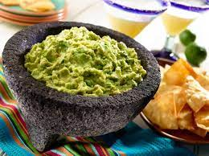

guacamole

Description
Guacamole or guacamole is a Mexican sauce prepared with avocado and green chili or chili pepper, and sometimes tomato/tomato. The name guacamole comes from the Nahuatl ahuacamolli translated into Spanish, which is made up of the words ahuacatl + molli.
Ingredients
- peeled
- ripe avocados
- salt
Steps
- Slice three ripe avocados in half, remove the pit and scoop them into a mixing bowl.
- Then use a fork to gently mash them to your desired level of chunky or smooth.
- Add the onions, tomatoes, cilantro, jalapeno pepper, garlic, lime juice and salt and stir everything together.
click to return to the main